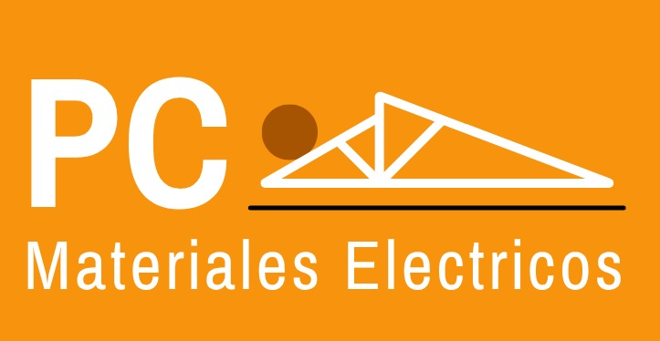
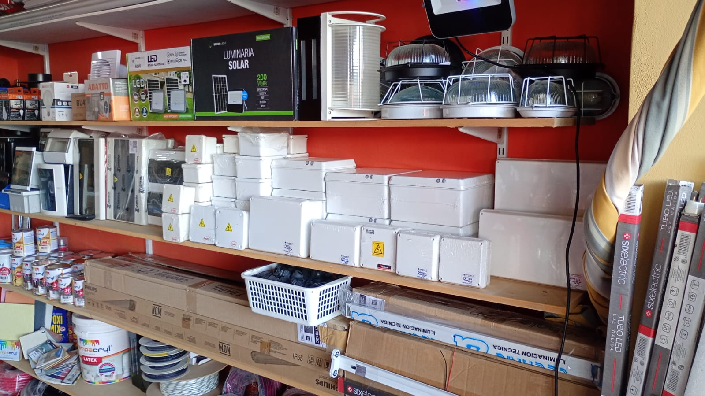
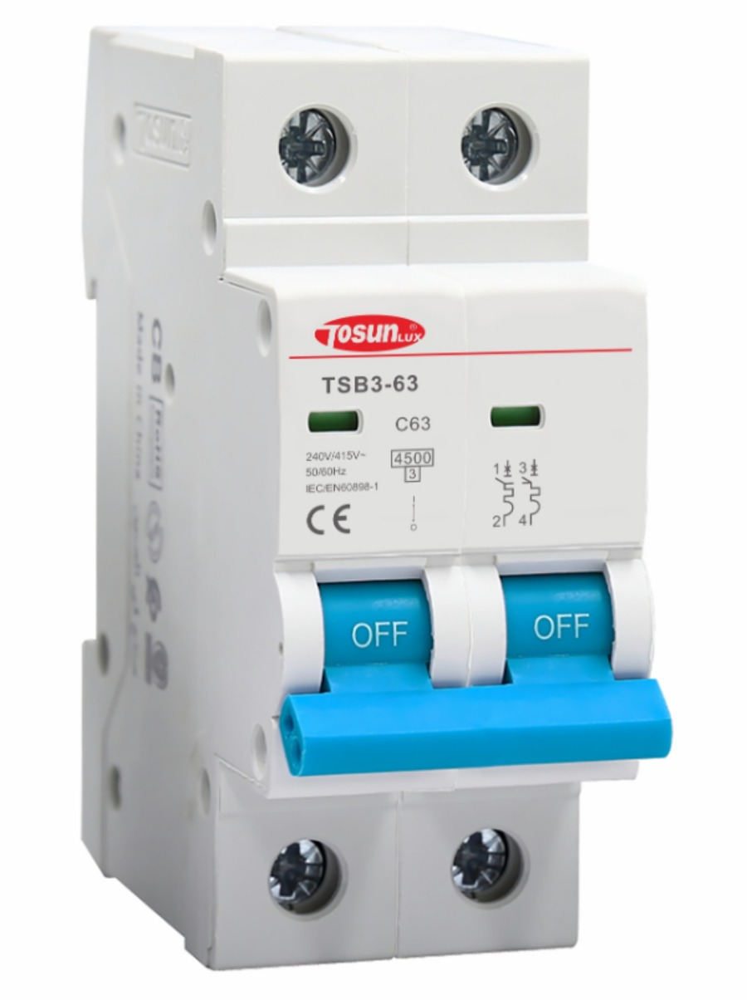
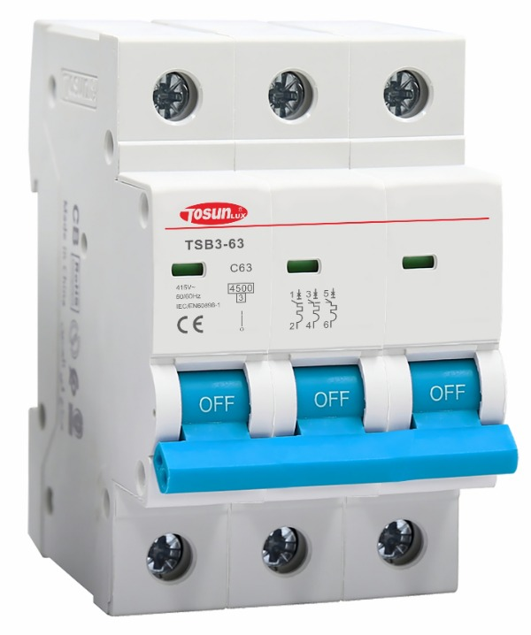
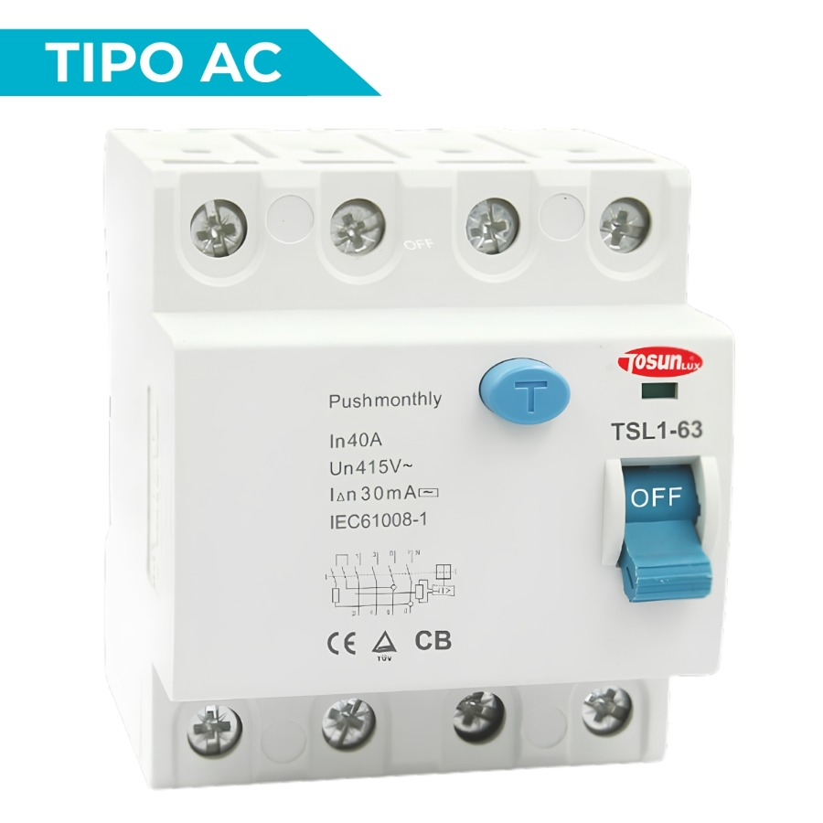

Material eléctrico
Elementos para instalaciones y proyectos eléctricos, con opciones para compras mayoristas y minoristas.

PCMateriales eléctricosMaterial eléctrico · General Pico
Materiales eléctricos e iluminación para empresas, ferreterías y proyectos. También encontrás herramientas y ropa de trabajo.
Venta mayorista y atención minorista en local.

Energía para cada proyecto01 / Quiénes somos
Somos una micropyme de General Pico. Vendemos materiales eléctricos al por mayor a empresas y ferreterías, y atendemos ventas minoristas en nuestro local.
02 / Lo que encontrás
Consultanos por disponibilidad, marcas y opciones de compra. Si necesitás el catálogo, te lo compartimos por Drive.
Elementos para instalaciones y proyectos eléctricos, con opciones para compras mayoristas y minoristas.
Alternativas de iluminación para distintos espacios y necesidades.
Herramientas pensadas para electricistas y personas del rubro.
Indumentaria de trabajo para acompañar las tareas de todos los días.
03 / En el local
Conocé nuestro local y algunos de los productos que ofrecemos en General Pico.
04 / Protección eléctrica
Interruptores termomagnéticos y diferenciales Tosun. Consultanos por especificaciones y disponibilidad.



05 / Algunas marcas
Trabajamos con marcas reconocidas del rubro eléctrico.
¡Y muchas más!
06 / WhatsApp · Canal principal
Escribinos para consultar disponibilidad y coordinar tu pedido. Si necesitás el catálogo, te lo compartimos por Drive.
Consultá por WhatsAppTambién en Instagram
07 / Preguntas frecuentes
Sí. Vendemos materiales al por mayor a empresas y ferreterías, y también atendemos ventas minoristas en el local.
El catálogo se comparte por Drive. Escribinos por WhatsApp y te lo enviamos.
Podés consultar y coordinar tu pedido por WhatsApp. La página no tiene carrito ni procesa pagos online.
Materiales eléctricos, iluminación, herramientas y ropa de trabajo. Consultanos por disponibilidad.
Entre otras: Tosun, Jeluz, Siemens, Ledvance, Osram, Candela, Trefilcon, Interelec y Home-Line.
En C. 108 n.º 365 N, entre 105 y 107, en General Pico.
De lunes a viernes, de 15:30 a 19:30. Los sábados, de 9:00 a 13:00 y de 15:30 a 19:30.
Sí, además de materiales eléctricos e iluminación, ofrecemos herramientas y ropa de trabajo.